Try It: Tubes
Activity: Placing tubes in assembly with XpresRoute
Click here to download the activity file.
When you complete this activity, you will be able to:
-
Add tubes to the design using PathXpres.
-
Add tubes by manually creating tube paths.
-
Add end treatments to tubes.
-
Modify tube paths and update the tube part.
-
Edit the tube part after the tube is created.
-
Output a Bend Table of the tube parts for manufacturing.
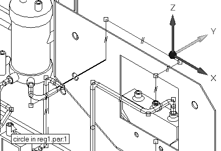
Open Xpres.asm with all the parts active.
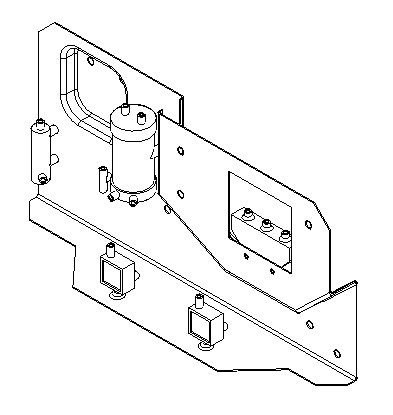
Click Tools→Evirons→XpresRoute.
Choose File menu→Settings→Options→Tube Properties tab.
Set the tube properties values as shown, and then click OK.
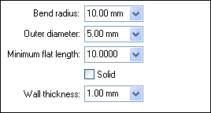
Click the Routing Path command.
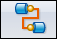
For the first port, on the part wall.psm, click the front edge of the far right hole.
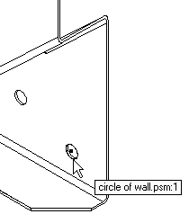
The front edge is selected so the tube will extend toward the front of the assembly. If you select the rear edge of the hole, the tube path tries to project toward the rear of the assembly.
For the second port, select the rear inlet on the blue part reg1.par as shown. After you click the rear port, the tube path should highlight.
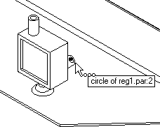
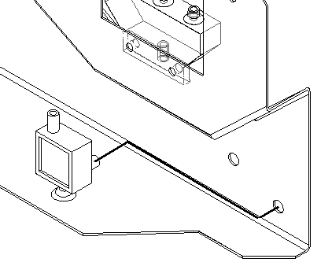
Accept the tube path by clicking Finish. The tube path changes to the profile color and displays the relationships applied along the path.
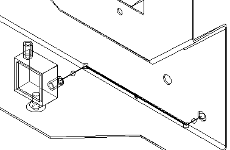
Click Cancel.
Click Home→Tubing→Tube
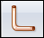
.The Tube Options dialog box should display as shown. If the dialog box is not displayed automatically, click the Tube Options button. Check the values against the values in the image below and make any necessary adjustments.
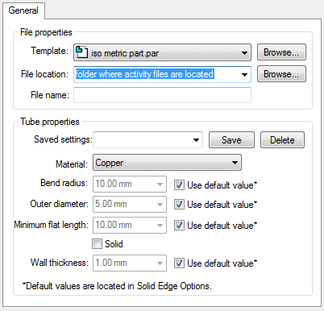
To select the folder where the part file for this tube will be stored, click the Browse button and select the folder location where the activity files are located.
On the dialog box, clear the Show this dialog when the command begins option. To see this box in the future, click the Tube options button on the command bar.
Type tube001 as the new file name and click OK.
Select the tube path just created.
In the Name box, tube001 is displayed. Click the Accept button.
The result should look like the following illustration.
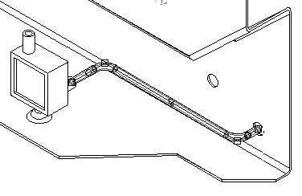
To accept this result, click Finish.
Click Cancel.
To construct a second path, click Routing Path.
For the first port of this new path, click the hole to the left of the first hole selected on wall.psm.
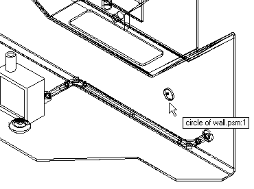
For the second port, click the bottom port on the valve body pvalve.par.
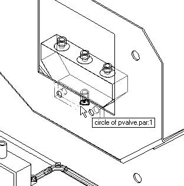
To accept this tube path, click Finish on the command bar.
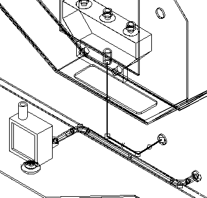
To place a tube using this path, click the Tube command.
Select the path just created.
In the name box, type the name tube002.
Click Preview.
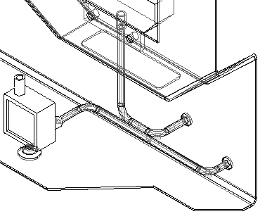
In the 3D window, it looks like the two tubes intersect each other. By checking the window with the right view of the assembly, you can see that the two tubes do not interfere with each other.
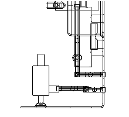
Click Finish to complete the placement of the tube part.
Click Cancel.
Click Routing Path.
Select the far right port on pvalve.par as shown.
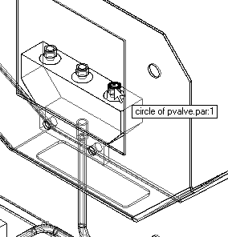
Select the top port on the blue reg1.par as shown.
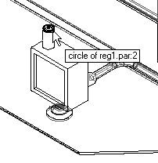
The resulting path should look like the following illustration.
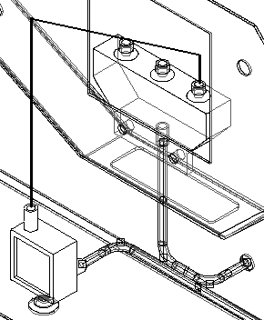
To see another path option, on the command bar, click the right blue arrow once. Keep clicking the blue arrow until the path looks like the illustration below. If you click too many times, use the left blue arrow to cycle back through the options.
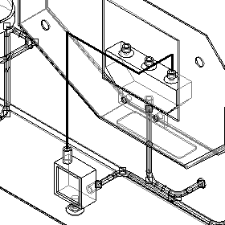
Click Finish to accept this path.
To construct a tube part from this path, click the Tube command.
Select the path just created, type tube003 for the tube part name, and click Preview to view the part. The result should look like the following illustration.
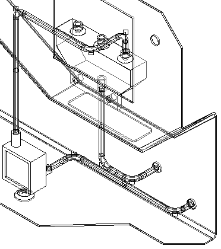
Click Finish.
Click Cancel.
In this lesson you learned how create tube paths both automatically and manually using OrientXpres. Once created, the tube paths were edited and tubes placed on the different paths. A bend table was created for the tube paths created.
-
The XpresRoute provides the basic tools for creating tubes for fluid and air transfer. Other tube part features can be modeled by in-place activating to the part environment.
-
XpresRoute provides editing, modification, and output tools for creating and manufacturing these types of tube parts.
-
PathXpres is an automated method of generating a 3D tube path between two ports. Solid Edge calculates as many solutions as possible for connecting the two ports, where the solution solves a maximum of five (5) segments.
-
OrientXpres activates automatically when you click the line segment command. This tool allows PathXpres to lock the line segment direction or planar orientation along a specific vector regardless of the mouse position on the screen. OrientXpres is activated by default, but its options are not active.
-
The Tube command is used to construct a tube part file from a tube path. The tube path must exist before the tube part can be constructed. When the tube command is clicked, the command bar updates to show the options and steps required for tube part creation.
-
The Bend Table command is accessed on the Tools tab. Bend table allows the extraction of tube information to an ASCII text file for use on the shop floor.
Answer the following questions:
-
What is the difference between PathXpres and OrientXpres?
-
What defines a tube?
-
If a path segment is moved, does the tube change to reflect the new position of the path segment?
-
After deleting a tube part, can the tube name be reused?
-
What information is contained in a bend table?
-
What is the difference between PathXpres and OrientXpress?
PathXpres finds as many valid solutions for routing between two points. You can view each solution and choose the one you desire.
OrientXpres allows you to route the path manually. Tools exist in path express to lock the direction of the path segments to either planes or axes.
-
What defines a tube?
A tube is defined by a path which routes the tube, and a part file which contains the geometry of the tube. The part file shows up as a part in the assembly pathfinder.
-
If a path segment is moved, does the tube change to reflect the new position of the path segment?
Paths are associatively linked to the tube part. Changes in the path cause the tube to change. The Tools>update all relationships command will refresh the tube geometry.
-
After deleting a tube part, can the tube name be reused?
A tube name can be assigned to another path if the tube part file is first deleted. If not, when creating the new tube, a message showing the part file exists will display.
-
What information is contained in a bend table?
The bend table contains the information needed to manufacture the tube. Segment properties such as length, rotation, radius, and angle format is contained in the bend table. Bend tables can also be formatted for X,Y, and Z radius format.
Learn more
Tube design workflowLook up more details
Transferring tubes to another assemblyXpresRoute and alternate assemblies